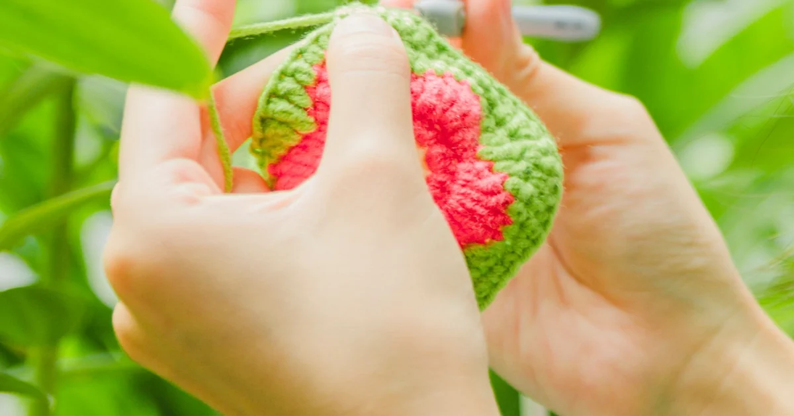

Patterns & Troubleshooting · Beginner guide
What Is the Difference Between US and UK Crochet Terms?
Translate US and UK crochet stitch names by checking the terminology system stated in the pattern.

US and UK terminology uses some of the same abbreviations for different stitch heights. Confirm the system before substituting stitch names.
Before you begin
Look for “US terms,” “UK terms,” or a stitch key. Hook markings may also differ, so do not rely on location alone.
Step-by-step instructions
- Find the terminology note and keep it beside the instructions.
- Common equivalents: US sc = UK dc; US hdc = UK htr; US dc = UK tr.
- Translate the stitch name before following a tutorial from another region.
- Check a sample row and stitch count after converting, especially with shaping or repeats.
What to check
Confirm terms before starting
These are common stitch-name equivalents; specialty stitches and pattern abbreviations need their own definitions. A mistaken system changes stitch height and fabric.
The Craft Yarn Council abbreviation list provides common US and UK stitch-name equivalents.
Frequently asked questions
What is US double crochet in UK terms?
It is commonly called treble crochet in UK terminology. Check the pattern key.
Does hook size use the same system?
Hook labels may use letters, numbers, or metric sizes. Millimeters help cross-check, but read the tool markings.
Does “sc” mean the same stitch in US and UK patterns?
No. US single crochet is commonly called double crochet in UK terminology. Check the pattern’s stated system before using an abbreviation.
Why the same abbreviation can produce a different fabric
US and UK terminology names some stitch heights differently. A US single crochet is commonly a UK double crochet; a US half double crochet is commonly a UK half treble; and a US double crochet is commonly a UK treble. These are common equivalents, not a substitute for the pattern’s own key. Specialty stitches may be defined differently by individual designers.
The difference matters because stitch height changes the row height, texture, and amount of yarn used. If you follow US directions while treating the names as UK terms, the resulting fabric may be taller or more open than expected even when your hand movements are consistent.
Check the pattern before converting anything
Look for a note such as “US terms” or “UK terms,” often near the materials or abbreviations. If no note appears, inspect the designer’s glossary or source page before beginning. Do not assume a pattern is US-based because it is written in English or uses a familiar hook-size label.
When converting a pattern, write a short conversion list beside it and translate every stitch name consistently. Keep special stitches in the designer’s original wording until you understand their specific instructions. Also distinguish stitch terminology from hook sizing: letters and numbers vary by system, while a millimeter measurement is a useful reference printed on many hooks.
Check a small section before continuing
After translating a short row, compare its stitch count and approximate height with the pattern notes or a sample image. A conversion should change the stitch name, not the number of placements, increases, or repeats. If a row says to work a set of stitches into a chain space, preserve that placement when you convert the stitch height.
If the result looks unexpectedly tall or short, stop and recheck the terminology source before changing your tension or hook. A terminology mismatch is better corrected at the start than compensated for across a finished piece.
Terminology mistakes to avoid
- Using a conversion from memory: confirm the pattern’s system and keep the reference visible.
- Changing the stitch name but losing the placement: preserve repeats, spaces, and counts when translating.
- Assuming every specialty stitch converts directly: follow the designer’s definition for clusters, shells, and other named stitches.
When you are browsing tutorials, check the terminology stated on the page before matching its stitch name to the pattern. A video made with US terms can still be useful for a UK pattern, but you must translate the stitch and preserve the number of loops and placements shown. Keep the original pattern wording visible while you work so that you do not accidentally switch systems halfway through a repeat.
Keep conversions clear
- Write “US” or “UK” at the top of your printed notes.
- Use a small swatch to check the converted stitch height before committing to a large project.
- When sharing the pattern with someone else, state which terminology you used.